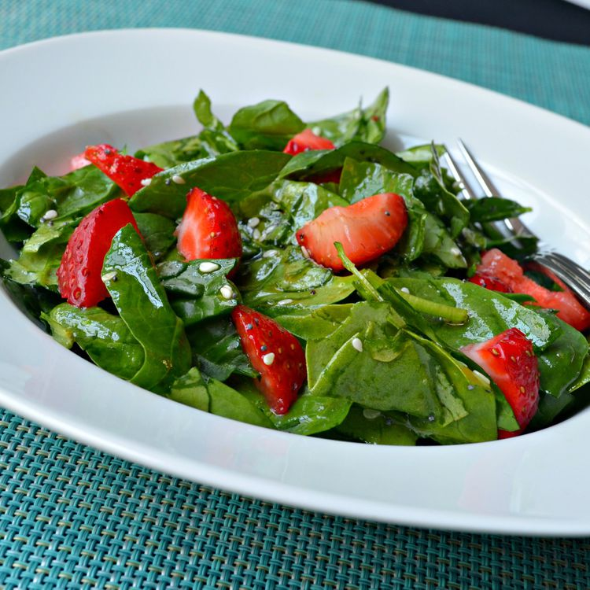

Spinach and Strawberry Salad
Spinach and Strawberry Salad

Description
We love this spinach strawberry salad all year round if we can find
strawberries! Even the grandchildren love this quick and easy salad.
Ingredients
- Rinsed and bite-size spinach
- Sliced strawberries
- Vegetable oil
- White sugar
- White wine vinegar
- Sesame seeds
- Poppy seeds
- Paprika
Steps
- Toss spinach and strawberries together in a large bowl.
-
Whisk oil, sugar, vinegar, sesame seeds, poppy seeds, and paprika
together in a medium bowl; pour over spinach and strawberries, and toss
to coat.
Home